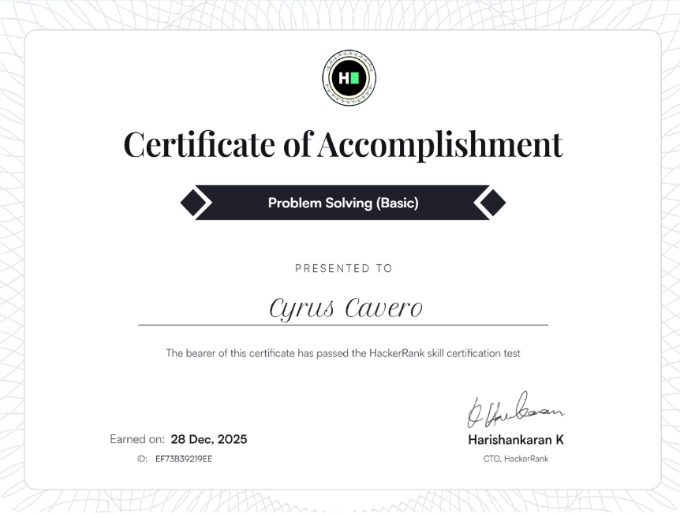

Who Am I?

Cyrus M. Cavero
Hi! I’m Cyrus Cavero, 21 years old, currently based in Santiago City, Isabela. I am an intern at Aretex Laoag, completing my OJT while gaining valuable experience, with the goal of being absorbed into the company.
Background
Education
Studying at Isabela State University Echague, majoring in Computer Science with a focus on Data Mining. My academic journey sparked my interest in technology, systems, and software development.
Interests
- Gaming & eSports
- Coding & Software Development
- Cybersecurity & Ethical Hacking
- Music & AI
Goals
My aim as a developer is to create practical, user-friendly systems and websites that help people work efficiently, while continuously improving my skills.
Skills & Technologies
A quick overview of the technologies and tools I use.
Programming Languages
Python
Used for scripting, automation, and problem-solving. This is the language I am most comfortable with and regularly practice through small projects and exercises.
HTML, CSS & JavaScript
Used to build and design websites. Learned during Software Engineering and improved through personal projects and continuous practice.
Frameworks & Libraries
Bootstrap
Used to create responsive layouts and user interface components for school and personal projects.
Tools & Platforms
Kali Linux
Used for cybersecurity testing and penetration testing on virtual machines such as Windows XP, Windows 7, and Metasploitable.
Want to see the full list? Visit my Skills & Technologies page →
Licenses & Certifications
Vercel
Issued: Feb 2026
Credential ID: dashboard-app

HackerRank
Issued: Dec 2025
Credential ID: EF73B39219EE

IBM
Issued: Dec 2025
If you want to check out all my certificates, you can visit my LinkedIn Certifications page .